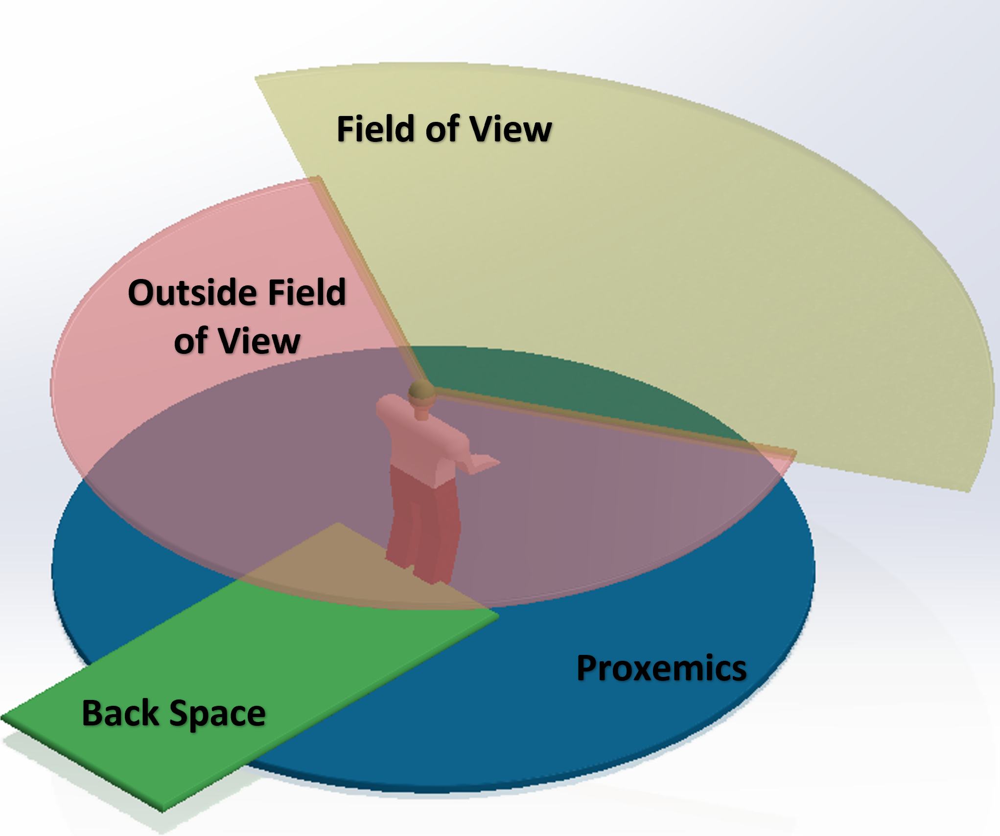
Development of a Human-Aware Navigation Framework for Autonomous Mobile Robots
A fuzzy logic and potential field-based motion planning framework prioritizing human safety and comfort in human-robot interactions.
What is the problem that I am trying to solve?
As robots move from traditional settings like factories into public spaces like hospitals and resturants, navigation must account for human related factors like human comfort, safety and preferences—not just obstacle avoidance.
What is Human-Aware Navigation?
Human-Aware Navigation (HAN) enables robots to account these human related factors in the form of predefined rules derived from experimentation and literature review. The field of HAN is analogus and often finds itself overlapping with situation-aware navigation. Overall, HAN consists of wide range sub-fields like perception, motion prediction, human-robot behavior psychology, etc...... However, my work solely concentrates on developing a base framework on which few of these human-related rules can be modelled and focuses on path planning aspect. The general idea is that once this layer is built, the other layers of HAN like perception can be constructed.
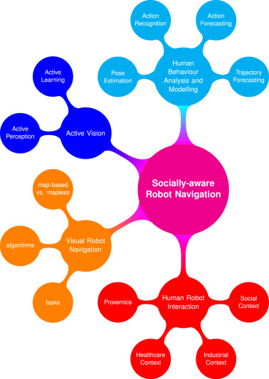
So, what are these HAN rules?
In short, HAN rules (here) could be as simple as do not approach close to human or do not navigate between two humans when they are talking. There could be hundereds of rules, depending upon environment in which the robot operates or agents in the environemnt. For example, a hospital might not have same set of rules when compared to a resturant or a airport. Similarly, the rules might vary if the humans in the environment is older or if there or a group of humans present.
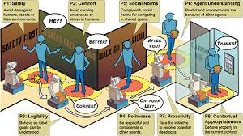
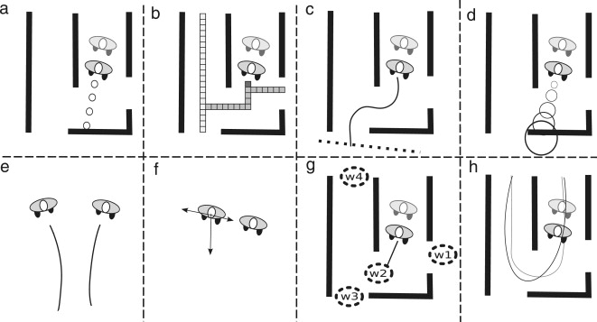
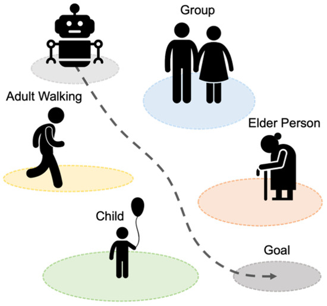
Considering all these, what's the scope of my work?
As you might have observed, there could be a thousand permutation and combination depending on sub-field of HAN and rules. And since, I am the human developing the framework here (not the robot), the idea is to develop a base framework with a limited set of features and later develop it in the future.
Thus, in my work I focus on path planning with assumption that there is a perfect percetion of human with their corresponding states known to the robot within sensing range. Among the wide variety of HAN rules available, I select three:
- Proxemics (PR): A safety buffer around a human that the robot should avoid entering to respect personal space and ensure comfort.
- Back Space (BS): A zone behind a human that the robot should avoid navigating into, as humans cannot see what's behind them, making sudden movements unsafe.
- Field of View (FV): The visible area in front of a human; robots should avoid staying within this field to remain clear when human moves.
Again, depending on the context, environment and agents, these three dimensions tend to change. For example an older human might require the robot to maintain a larger space than a younger one.
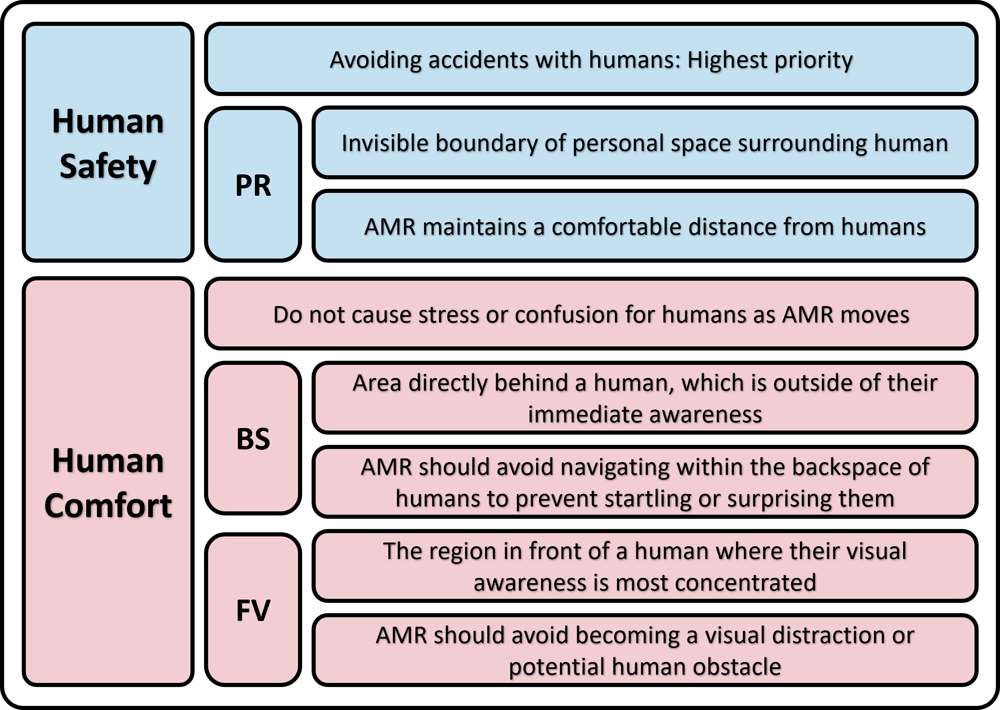
Now, my work.....
There are numerous path planning techniques considered in the realm of HAN. Notably, probabilistic road maps, optimal reciprocal collision avoidance, model predictive control, reinforcement learning, rapidly exploring random trees, etc..... While each one has its own merits and demerits, for my work I chose potential field based technique, primarily of it's mathematical simplicity.
-
Explain potential field-based technique.....
In simple perspective, consider that robot as south pole of a magnet and destination of the robot as north pole. Under nominal conditions, the robot naturally gets attracted towards the destination. However, consider any obstacle in the environment as south pole. Now, the cummulative effect results in the robot repulsed away from the obstacles and attracted towards destination effecting in a net potential field! Sounds easy right??? Hold that thought.....
Simple?? Hold on... 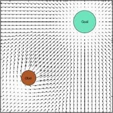
Potential field Potential field (Artificial potential field (APF), generally used.....) suffers from certain drawbacks
- Local Minima: A situation where the robot gets stuck in a position that feels optimal (no better path nearby) but isn’t the actual goal, causing it to stop or oscillate without reaching the target.
- Goal not reachable due to obstacle nearby (GNRON): A situation in which the robot cannot reach goal when the an obstacle is close to the end position.
So, what's the solution???
There could be multiple ways to overcome these, but I chose a modification of potential field - Enhanced Potential Field (EPF)
It solves local minima by rotating the repulsive field generated by obstacle by a certain degree and GNRON is solved by accounting distance to end position in repulsive field calculation.
Another question..... Is the EPF on its own good enough for building our HAN framework???
Definitely not if you do not want to spend time tuning the parameters for each and every scenario that the robot might face. That brings us to..... -
Fuzzy Inference System (FIS):
A Fuzzy Inference System is a decision-making framework that uses fuzzy logic to handle uncertainty and approximate reasoning—similar to how humans make decisions. Instead of strict true/false rules, it works with degrees of truth to map inputs to outputs using if-then rules, fuzzy sets, and membership functions.
Why FIS?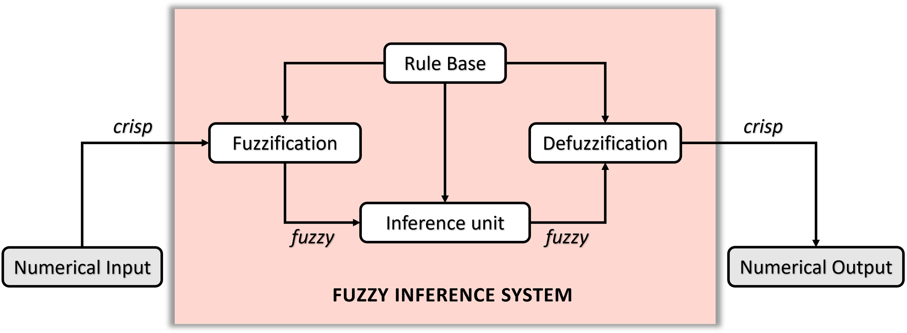
Structure of FIS
Initially, I thought of going to a RL-based route. However, one of the advantages of FIS is its interpretability and considering the human centric rules, we might need to understand what's happening and how can we improve.
Now, how are we using FIS to assist EPF?
In potential field path planning, scaling factors (or weights) control the strength of attractive forces (from the goal) and repulsive forces (from obstacles), determining how strongly the robot reacts to these forces; they balance the robot's speed vs. smoothness, how far it keeps from obstacles, and help avoid getting stuck in local minima, with proper tuning crucial for safe, efficient, and smooth navigation.
FIS helps here by adaptively selecting these factors based on the environment. For example, if you are far from end position and there are no obstacles/human, speed up....
What does this combination result in????
I tested this combination in three test cases:
- Case 1: We examine a simple environment that includes a human and a few static obstacles. The objective here is to test whether we can successfully overcome local minima and GNRON.
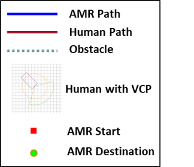
Video Legend 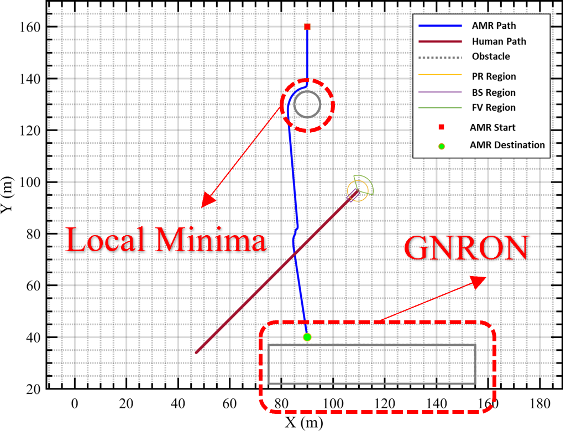
Robot's path 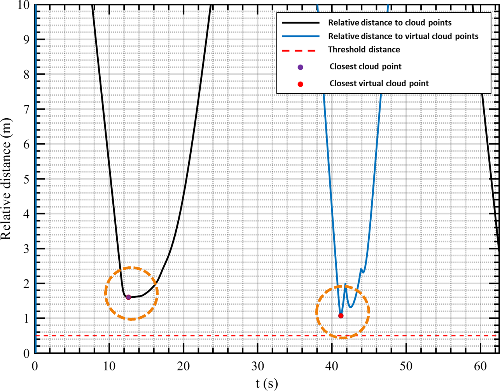
Distance to obstacles - Case 2: We test the system in a more complex environment. In this scenario, we introduce three static obstacles and two humans.
Video Legend 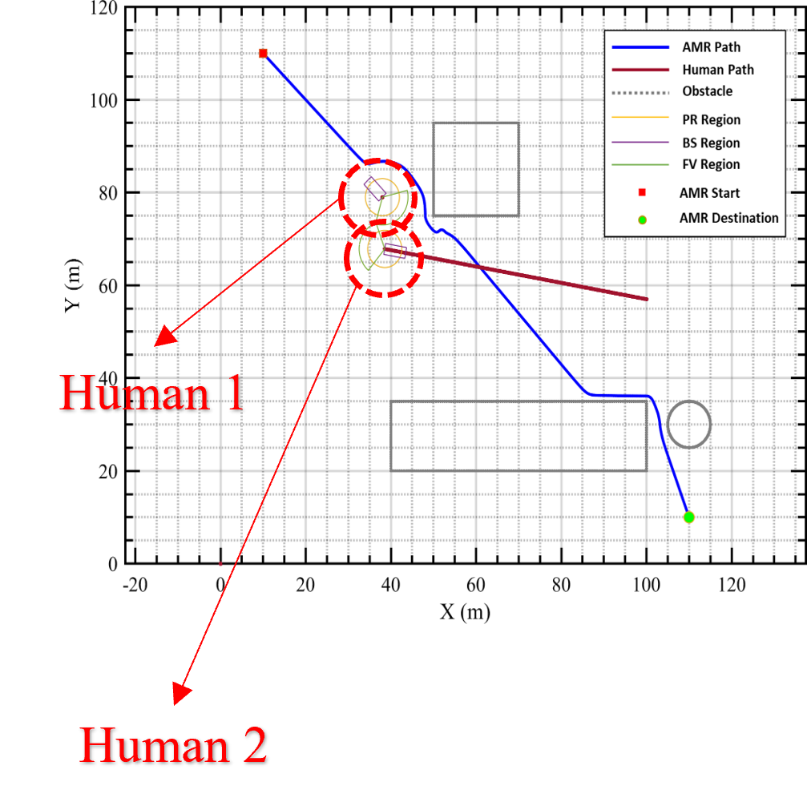
Robot's path 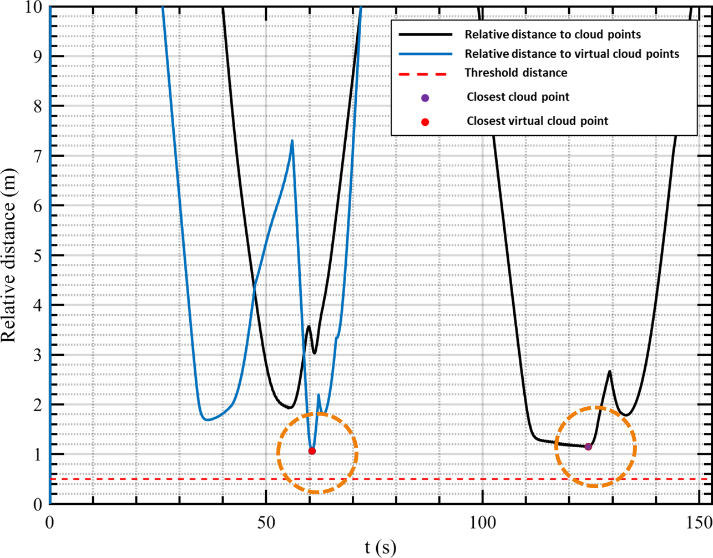
Distance to obstacles - Case 3: It is designed to represent a more complex and realistic environment—an airport. Airports are busy spaces filled with human activity, static obstacles, and unpredictable events. For our work, we modeled a very small section of the airport space, where the AMR must navigate around two large circular obstacles, two rectangular obstacles, and six humans.
Video Legend 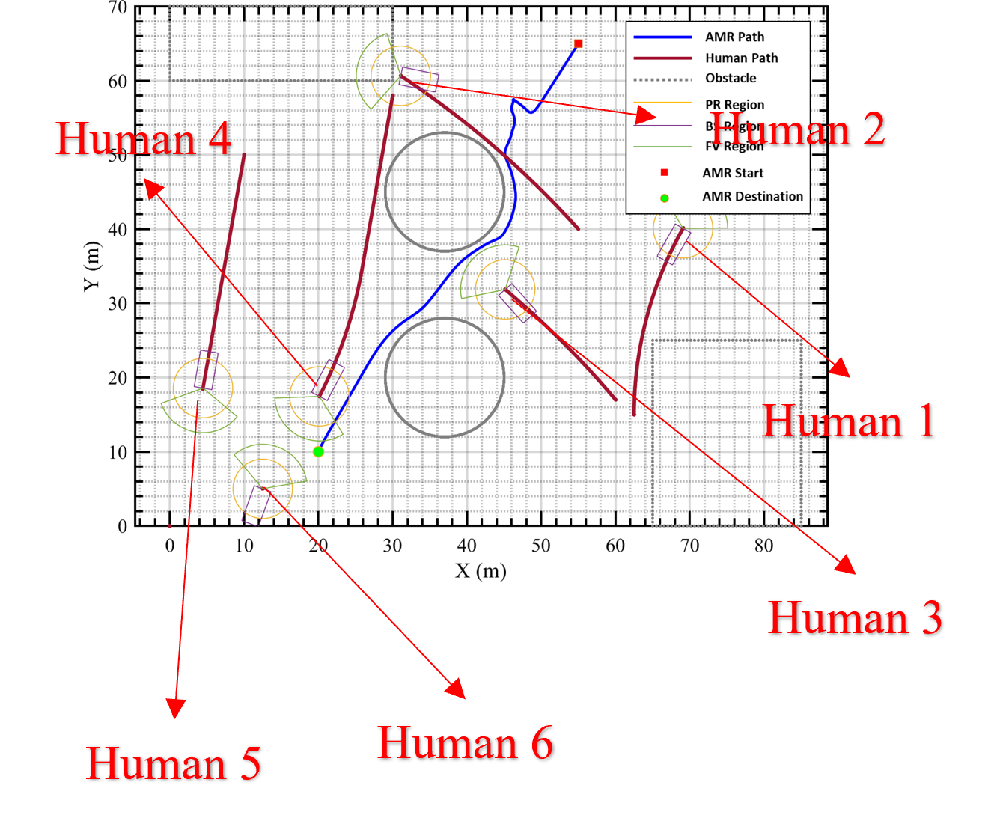
Robot's path 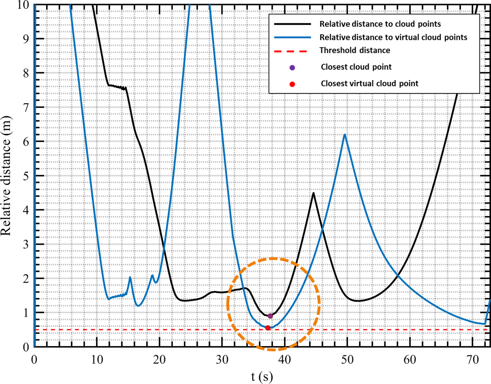
Distance to obstacles
Alright, so what can we iterpret from these results?
In short, the AMR is able to successfully reach the end position without violating the HAN rules and avoiding collision with the static obstacles. The FIS and EPF worked well together to adaptively tune the factors.
To dive and dissect more, feel free to read my two publications: NAFIPS and CES. I have explained in depth about all these above stuff.
And definitely, I welcome you to reach out to me for any clarifications!
Next Steps
So, I have many parallel and perpendicular areas that I am interested in exploring. Notable:
- We know that FIS-EPF works well to adaptively select the factors and navigate well depending on the environmental constraints. But is it robust and scalable? (i.e.) We tested for three test cases, but what about a million cases that the robot might face in a real world deployment? My immediate answer: No, its not gonna work straight away. Thats because, FIS has it's own set of parameters called rules (different from HAN rules) and membership functions. In my work, I have selected them intuitively and for it to work on diverse environment, the system should be trained (or optimized) for the environment. This is my immediate and current focus.
- We have built a framework with limited number of rules and FIS-EPF. But I'd love to see it expanded to include a wide range of HAN rules and different planning techniques.
- How about adding a vison and human-motion prediction stacks?
- Would'nt it be great to test the system in a real-world setting?
- The list could go unending.............🤫😂😂